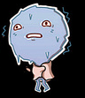
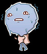
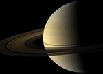
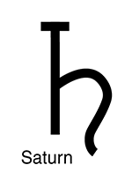

Сатурн
 В основном Сатурн состоит из водорода, с примесями гелия и следами воды, метана, аммиака и тяжёлых элементов. Внутренняя область представляет собой небольшое ядро из железа, никеля и льда, покрытое тонким слоем металлического водорода и газообразным внешним слоем. Внешняя атмосфера планеты кажется из космоса спокойной и однородной, хотя иногда на ней появляются долговременные образования. Скорость ветра на Сатурне может достигать местами 1800 км/ч, что значительно больше, чем на Юпитере. У Сатурна имеется планетарное магнитное поле, занимающее промежуточное положение по напряжённости между магнитным полем Земли и мощным полем Юпитера. Магнитное поле Сатурна простирается на 1 000 000 километров в направлении Солнца. Ударная волна была зафиксирована «Вояджером-1» на расстоянии в 26,2 радиуса Сатурна от самой планеты, магнитопауза расположена на расстоянии в 22,9 радиуса.
{kind=link}
 Сатурн обладает заметной системой колец, состоящей главным образом из частичек льда, меньшего количества тяжёлых элементов и пыли. Вокруг планеты обращается 62 известных на данный момент спутника. Титан — самый крупный из них, а также второй по размерам спутник в Солнечной системе (после спутника Юпитера, Ганимеда), который превосходит по своим размерам Меркурий и обладает единственной среди спутников Солнечной системы плотной атмосферой.
{kind=link}
В настоящее время на орбите Сатурна находится автоматическая межпланетная станция «Кассини», запущенная в 1997 году и достигшая системы Сатурна в 2004, в задачи которой входит изучение структуры колец, а также динамики атмосферы и магнитосферы Сатурна.